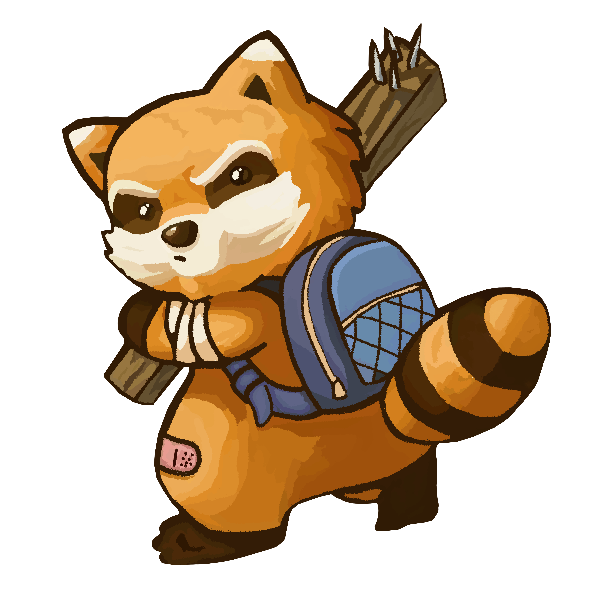

Oi, tudo bem?
Esta página é um projeto que estou criando e ainda está em construção. Estou trabalhando para deixá-lo
cada vez melhor, então você pode encontrar algumas áreas que ainda estão em desenvolvimento.
Enquanto isso, fique à vontade para explorar e testar o que já está pronto. Se você encontrar algo que
não está funcionando como deveria ou tiver sugestões, adoraria ouvir de você!
Agradeço pela visita e pelo apoio enquanto continuo a trabalhar neste projeto. Espero que você goste
do que está por vir!

Se você é fã de jogos de sobrevivência e está em busca de uma experiência profunda e desafiadora, "Project Zomboid" é um título que você definitivamente deve conhecer. Este jogo não é apenas uma das melhores ofertas no gênero de sobrevivência; ele é uma verdadeira aula de como criar uma experiência de jogo imersiva e realista.
"Project Zomboid" se destaca por sua abordagem realista e detalhada para a sobrevivência em um mundo pós-apocalíptico. Desde o momento em que você começa a jogar, é claro que este não é apenas mais um jogo de zumbis. A profundidade do sistema de sobrevivência é impressionante: você deve gerenciar sua fome, sede, saúde mental e física, enquanto lida com a constante ameaça de zumbis e a necessidade de encontrar e manter recursos essenciais.
O mundo de "Project Zomboid" é vasto e aberto, oferecendo uma grande variedade de ambientes para explorar. Cada cidade e área do jogo é meticulosamente projetada, proporcionando uma sensação autêntica de um mundo em colapso. A aleatoriedade dos eventos e a interação com o ambiente garantem que cada partida seja única, mantendo o jogo fresco e interessante a cada nova jogada.
O jogo oferece uma enorme gama de opções de personalização, tanto para o seu personagem quanto para a maneira como você aborda a sobrevivência. Você pode escolher entre uma variedade de habilidades e características, o que permite que você crie um personagem que se adapte ao seu estilo de jogo. Além disso, a necessidade de planejamento estratégico para construir abrigos, administrar recursos e formar alianças (ou evitar conflitos) adiciona camadas adicionais de complexidade e engajamento.
"Project Zomboid" também se beneficia de uma comunidade de jogadores dedicada e ativa. A interação com a comunidade é facilitada por fóruns, mods e atualizações regulares, que continuam a expandir e aprimorar o jogo. Os desenvolvedores estão comprometidos com a melhoria contínua do jogo, ouvindo o feedback da comunidade e adicionando novos recursos que enriquecem a experiência geral.
Em resumo, "Project Zomboid" não é apenas um jogo de sobrevivência; é uma experiência imersiva que combina realismo, estratégia e exploração de maneira única. Se você está procurando um desafio real e uma profunda sensação de realização ao superar as adversidades, este jogo é uma escolha excepcional. Prepare-se para um mergulho profundo em um mundo onde a sobrevivência é a única prioridade e cada decisão conta.